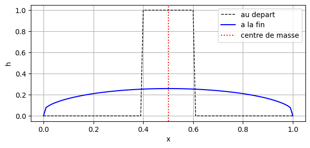

Tutoriel 10#
Une diffusivité qui dépend de la solution#
Ce tutoriel permet de traiter une diffusivité non constante, utile à l’exercice de cette semaine. L’équation de diffusion s’écrit toujours
mais D n’est plus un nombre fixé une fois pour toutes : il dépend de la solution elle-même, disons \(D = k\,h^2\) pour fixer les idées. L’équation devient alors non linéaire, et D doit être recalculé à chaque itération.
Trois choses changent dans la structure du code :
Dn’a plus la taille de la solution ;le pas de temps doit être recalculé dans la boucle ;
le nombre d’itérations n’est plus connu à l’avance.
1. Où vit D ?#
D sert à calculer un flux, c’est-à-dire ce qui passe d’une cellule à sa voisine : il ne vit pas sur un point de la grille, mais entre deux points. Il est donc de taille nx-1, comme la dérivée qu’il multiplie.
Or h est de taille nx. Quelle valeur de h utiliser entre les points \(i\) et \(i+1\) ? La moyenne des deux :
0 1 ... i-1 i i+1 ... Taille
h |-----|-----|-----|-----|-----|----... nx
0 1 ... i-1 i i+1
hm = 0.5*(h[1:]+h[:-1]) |-----|-----|-----|-----|-----|-... nx-1
C’est exactement la même moyenne de deux cellules voisines que celle du tutoriel 9 pour placer les vitesses aux interfaces.
import numpy as np
import matplotlib.pyplot as plt
Lx = 1.0 # taille du domaine
nx = 101 # nombre de points
k = 1.0 # coefficient de la diffusivite
x = np.linspace(0, Lx, nx)
dx = Lx/(nx-1)
h = np.zeros(nx)
h[np.abs(x-0.5) < 0.1] = 1.0 # une solution de depart, symetrique
hm = 0.5*( h[1:] + h[:-1] ) # la valeur ENTRE les points
D = k * hm**2 # la diffusivite, la ou vit le flux
qx = - D * ( h[1:] - h[:-1] )/dx # le flux
print("h :", h.shape, " la solution, sur les noeuds")
print("hm :", hm.shape, " entre les noeuds : une cellule de moins")
print("D :", D.shape, " comme le flux")
print("qx :", qx.shape)
print()
print("-> la mise a jour s'ecrit : h[1:-1] += - dt * ( qx[1:] - qx[:-1] )/dx")
h : (101,) la solution, sur les noeuds
hm : (100,) entre les noeuds : une cellule de moins
D : (100,) comme le flux
qx : (100,)
-> la mise a jour s'ecrit : h[1:-1] += - dt * ( qx[1:] - qx[:-1] )/dx
2. Le pas de temps change à chaque itération#
La contrainte de stabilité dépend de D, donc de la solution : elle doit être recalculée dans la boucle.
On prend le maximum de D sur tout le domaine, car l’endroit le plus « rapide » contraint tout le monde. Et D vaut zéro là où la solution est nulle : \(dt_\mathrm{diff}\) serait alors infini. C’est ici que dt_max cesse d’être un confort pour devenir indispensable.
3. Le nombre d’itérations est inconnu#
nt = int(duree/dt) n’a plus de sens, puisque dt change à chaque tour. On lance donc la boucle sur un nombre volontairement très grand, et on en sort avec un break dès que la durée voulue est atteinte.
for it in range(100000): # un nombre volontairement tres grand
...
temps += dt
if temps > duree:
break
Et si l’on se trompait de moyenne ? Écrire hm = h[:-1] donnerait une taille correcte, et Python ne signalerait rien — mais ce choix privilégie arbitrairement la cellule de gauche. Vérifions-le : choix = 1 prend la moyenne des deux cellules, choix = 2 prend celle de gauche. Comme la solution de départ est symétrique, son centre de masse doit rester en \(x = 0.5\). Exécutez la cellule, puis passez choix à 2.
choix = 1 # <<< CHANGEZ CETTE LIGNE : 1 -> moyenne des deux ou 2 -> cellule de gauche
dt_max = 0.01 # pas de temps maximal
duree = 1.0 # duree a simuler
temps = 0.0
h = np.zeros(nx)
h[np.abs(x-0.5) < 0.1] = 1.0
h_ini = np.copy(h)
for it in range(100000): # un nombre volontairement tres grand
if choix == 1:
hm = 0.5*( h[1:] + h[:-1] ) # la moyenne des deux cellules
else:
hm = h[:-1] # seulement celle de gauche
D = k * hm**2 # D depend de la solution : recalcule a chaque tour
dt = min(dt_max, dx**2/(2.1*np.max(np.abs(D))))
if it == 0:
dt_debut = dt
qx = - D * ( h[1:] - h[:-1] )/dx
h[1:-1] += - dt*( qx[1:] - qx[:-1] )/dx
temps += dt
if temps > duree: # on sort des que la duree est atteinte
break
centre = np.sum(x*h)/np.sum(h)
print("iterations :", it)
print("dt est passe de", round(dt_debut, 6), "a", round(dt, 6))
print("centre de masse :", round(centre, 4), " (il devrait valoir 0.5)")
plt.figure(figsize=(7,3))
plt.plot(x, h_ini, 'k--', linewidth=1, label='au depart')
plt.plot(x, h, 'b', label='a la fin')
plt.axvline(centre, color='r', linestyle=':', label='centre de masse')
plt.xlabel('x')
plt.ylabel('h')
plt.legend()
plt.grid(True)
plt.show()
iterations : 2656
dt est passe de 4.8e-05 a 0.000713
centre de masse : 0.5 (il devrait valoir 0.5)

Avec choix = 1, le centre de masse reste à 0.5000 : la solution est restée symétrique, comme le problème qu’elle décrit. Le pas de temps, lui, a augmenté d’un facteur 15 au fil des itérations — la solution s’aplatit, D diminue, et la contrainte de stabilité se relâche. C’est exactement ce qu’aucun nt calculé à l’avance n’aurait pu prévoir.
Avec choix = 2, le centre de masse a dérivé à 0.6590 : le modèle a inventé un mouvement d’ensemble qui n’existe pas dans l’équation.
Et surtout, rien n’a explosé : aucune erreur n’a été levée, le nombre d’itérations est resté raisonnable, et le profil final a l’air parfaitement plausible. C’est ce qui rend cette erreur bien plus dangereuse que celle du tutoriel 9, où le calcul partait immédiatement à l’infini.
D’où le réflexe : quand le problème est symétrique, vérifiez que la solution l’est aussi.